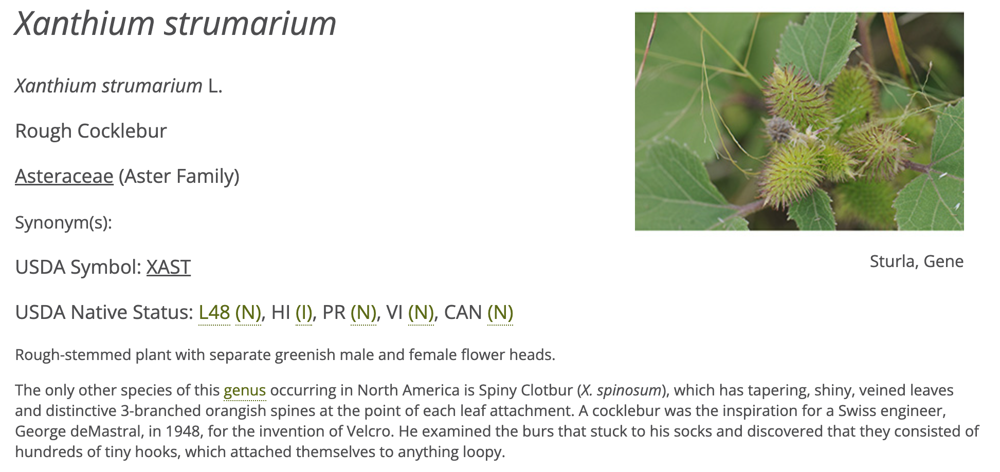
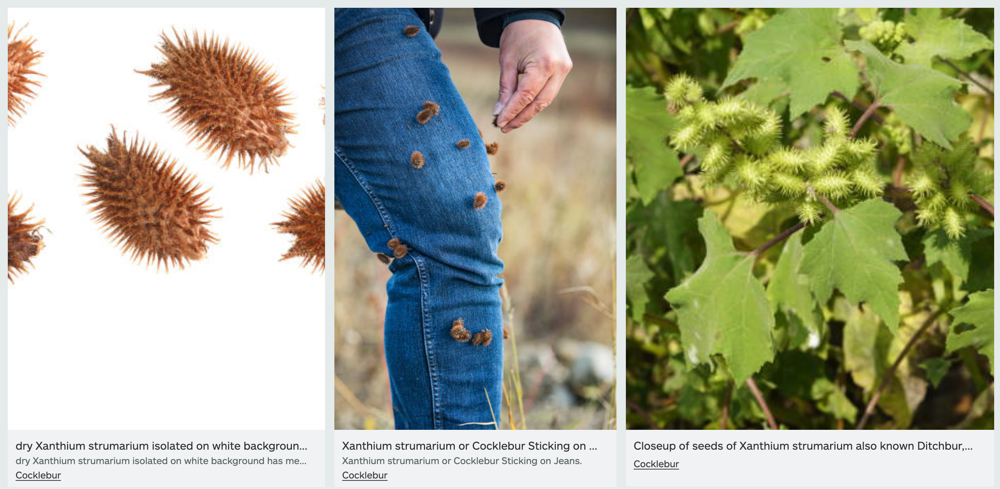
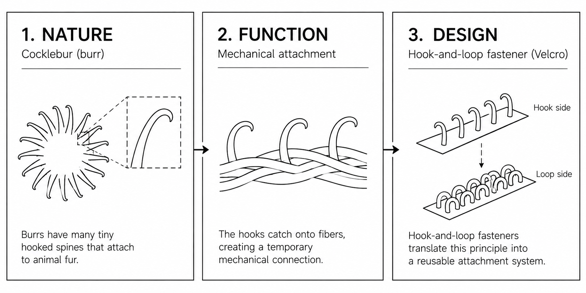
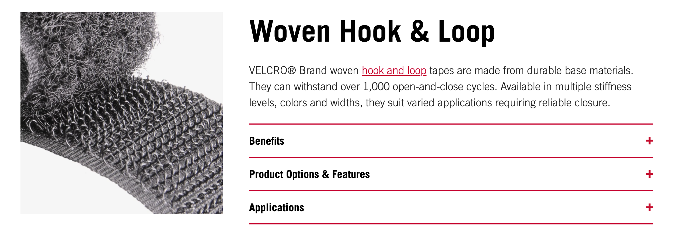

Sustainable Systems Fall 2026: Class 10 Demonstration
🧰 Nature → Function → Design
📍 Introduction
Biomimicry translates strategies found in nature into new artistic and design possibilities.
The objective is not simply to reproduce what nature looks like, but to understand how it works.
◼️ Example | Burrs → Hook-and-Loop Fasteners
01 — NATURE | Observe
Burrs use small hooked structures to attach to animal fur, allowing seeds to travel.

02 — FUNCTION | Abstract
Reversible mechanical attachment: Small hooks catch onto fibers, creating a temporary connection without adhesives.
Principle: Hook + fiber → temporary attachment

03 — DESIGN | Translate
Hook-and-loop fasteners apply this principle to create a reusable attachment system. The original invention was inspired by burdock burrs.

NATURE → FUNCTION → DESIGN
Observe a biological strategy → Identify how it works → Imagine a new application.
04 - PRODUCT | Application

◼️ Pair Exercise | Nature Already Solved It
4:25–4:40 PM · Working in pairs · 15 minutes
Step 01 — Examine the Example (3 minutes)
Review the burr example above. Notice the progression from an organism, to a mechanism, to an application.
Step 02 — Select a Design Challenge (2 minutes)
Working with your partner, choose one challenge:
- Attach two things
- Protect something fragile
- Keep something cool
- Move through air or water
- Create a lightweight structure
- Collect or transport water
- Respond to changing conditions (temperature, light, or moisture)
- Filter or separate materials (particles, liquids, or substances)
Step 03 — Identify a Natural Strategy (3 minutes)
Think of an organism, structure, or biological process that might address your challenge.
Ask:
- What does it do?
- How might it work?
- Which specific feature or behavior matters?
An informed guess is sufficient. Research and biological verification comes later.
Step 04 — Sketch a Design Translation (5 minutes)
On one sheet, make three quick sketches or diagrams:
| NATURE | FUNCTION | DESIGN |
|---|---|---|
| Draw the organism or biological feature. | Diagram the mechanism or behavior. | Sketch one possible artistic or design application. |
| What exists in nature? | How does it work? | How could the principle be used? |
Use arrows and a few short labels. Clarity matters more than technical/artistic completion.
◼️ Apply
From Observation → Design Process
| Stage | Guiding Question | Output |
|---|---|---|
| Nature / Observe | What biological feature or behavior is interesting? | Observation sketch |
| Function / Investigate | What does it do, and how? | Mechanism diagram |
| Principle / Abstract | What general strategy can be separated from the organism? | Short functional statement |
| Design / Translate | How might the strategy inform a new application? | Speculative design sketch |
The pair exercise is a quick introduction, not a finished research project. Keep your sheet as a starting point for the more detailed Class 10 investigation.